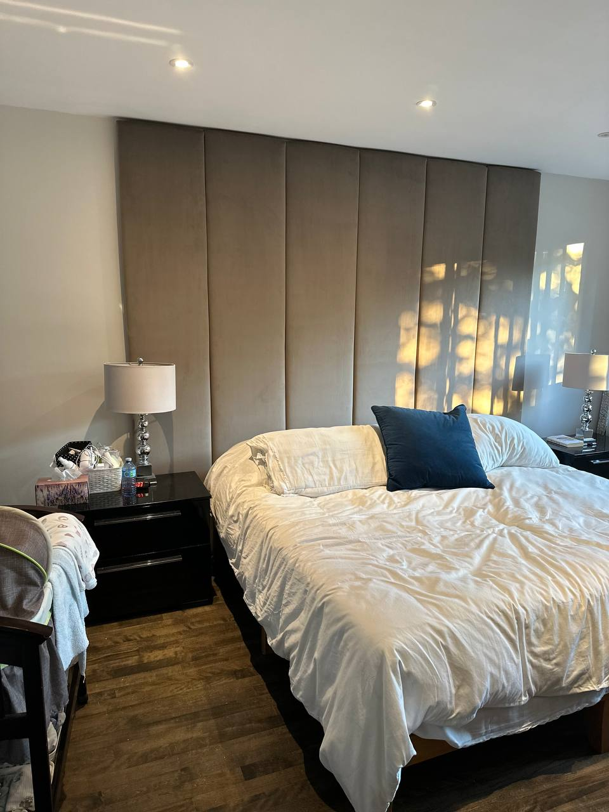

Custom Banquette Upholstery for Montreal Restaurants
New builds, reupholstering, and repairs for restaurants, cafés, and bars across Montreal. Commercial-grade fabrics. Custom dimensions. Since 1967.

Built for the demands of restaurant life
A restaurant banquette is one of the hardest-working pieces of furniture in any hospitality space. It must withstand hundreds of guests per week, spills, daily cleaning, and years of continuous service — all while looking polished and inviting. At Atlas Upholstering, we've been building and restoring commercial banquettes for Montreal's restaurant industry since 1967.
Every banquette we manufacture is built to your exact dimensions — whether that's a straight wall run, a curved alcove, an L-shaped corner, or a full U-shaped booth. We work from your floor plan or site measurements, so every unit fits precisely. Foam density, seat height, back angle, and cushion depth: all specified to your needs.

Our Banquette Work
A selection of restaurant and residential banquette projects from our Montreal studio.

3 Steps to Perfect Banquettes
1. Consultation
We visit your space or review your floor plans and measurements. We discuss your seating goals, aesthetic, timeline, and budget. You'll leave the consultation with a clear scope and a firm quote.
2. Fabric & Spec Selection
Choose from our library of commercial-grade fabrics — vinyls, faux leathers, performance velvets, and technical weaves. We help you select the right material for your traffic level, cleaning routine, and visual brand.
3. Manufacturing & Installation
Your banquettes are built in our Montreal workshop and delivered ready to install. We offer on-site installation and can work evenings or weekends to avoid disrupting your restaurant operations.
Banquette FAQ
-
The cost depends on the dimensions, configuration (straight, L-shaped, U-shaped), fabric choice, and level of detail such as tufting or decorative piping. We provide free, no-obligation estimates based on your specific project — contact us with your measurements or floor plan and we'll quote accordingly.
-
Lead time for custom banquettes is typically 2–4 weeks from final approval, depending on project scope and our current schedule. We plan deliveries and installation around your restaurant's hours to minimize any disruption to your service — including evenings and weekends.
-
We stock and work with contract-grade fabrics rated for a minimum of 100,000 double rubs (Wyzenbeek method), including vinyl, faux leather, performance velvet, and technical woven synthetics. These materials are cleanable, stain-resistant, and engineered specifically for high-traffic commercial environments like restaurants and bars.
-
Absolutely — custom sizing is the core of what we do. We fabricate every banquette from scratch, working directly from your architectural drawings, floor plans, or on-site measurements. We regularly handle curved walls, alcoves, angled corners, and non-standard configurations. No template, no standard size — just a banquette built exactly to fit your space.